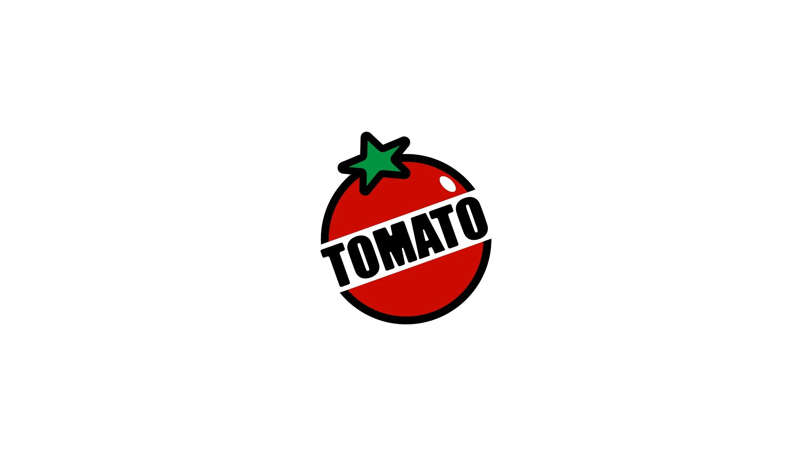
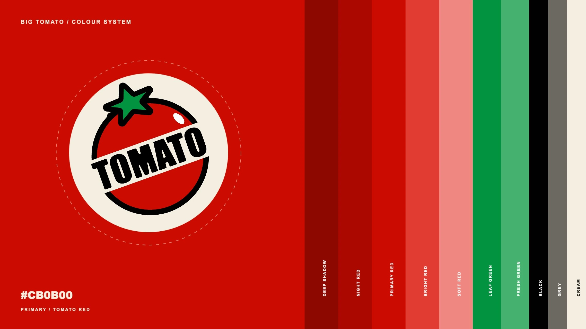
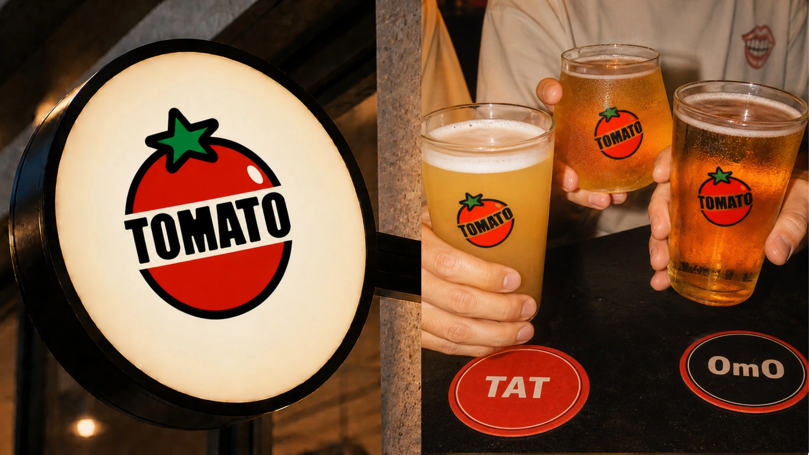
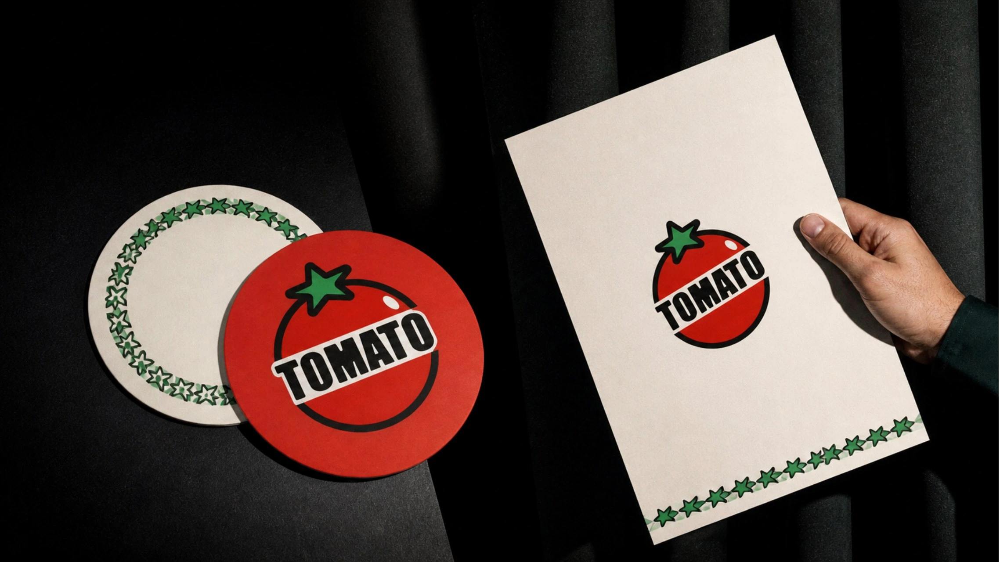
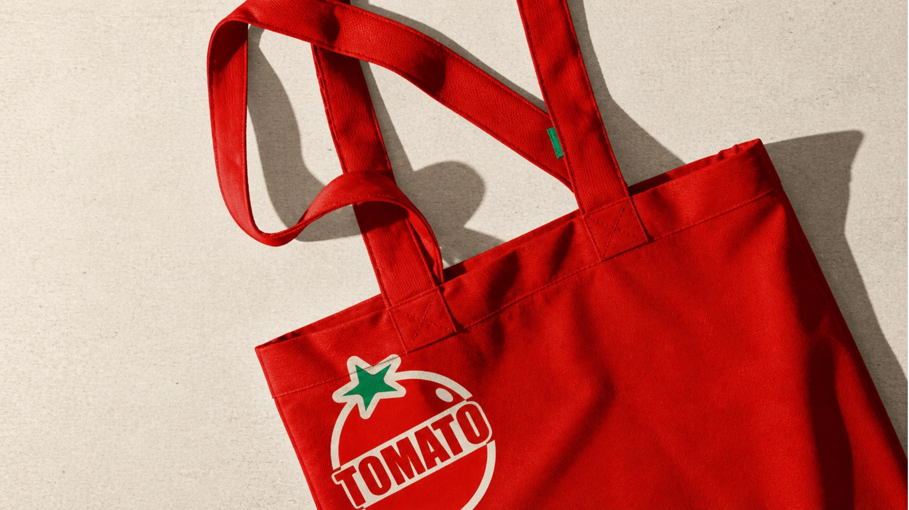
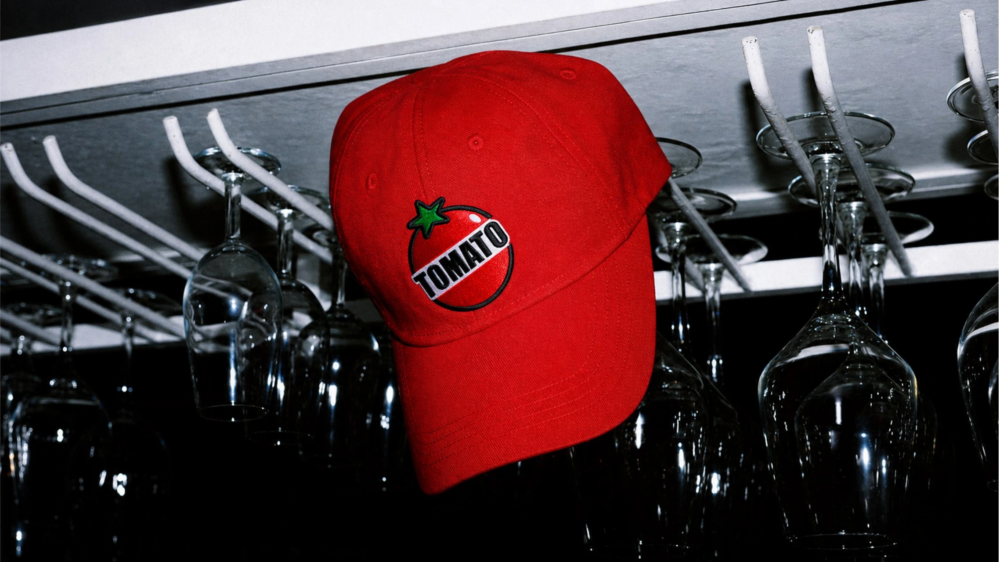
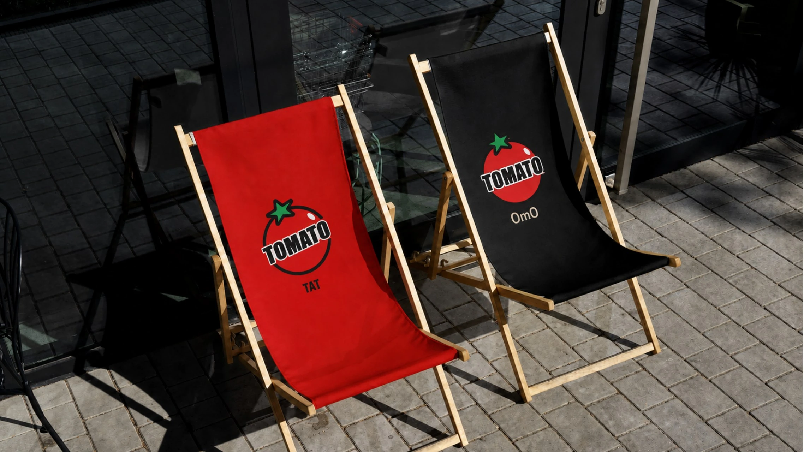
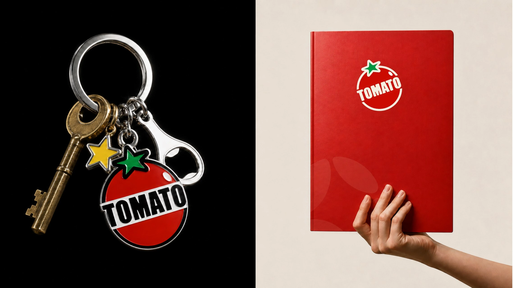

LOGO DESIGN · CRAFT BEER
BIG TOMATO
大番茄精酿
用一颗番茄和一组字标，设计一个好认、好记、带点俏皮的 Logo。
- SCOPE
- 精酿品牌
- ROLE
- Logo 设计
- OUTPUT
- 标志方案与效果展示
01 · LOGO CONCEPT
生活就像 TOMATO，
拿掉 TAT，还有 OMO。
生活里偶尔有一张 TAT 的哭脸，也总会遇见让人 OMO 的小惊喜。就像 TOMATO，拿掉 T、A、T，还剩一个 OMO。这句文字游戏，为大番茄添了一点不必太正经的小幽默。
设计时，我首先考虑的是好认、好记，也方便被人说起。圆形番茄、绿色叶片与倾斜字标互相呼应，再用鲜明的番茄红，让 Logo 显得可爱、俏皮。


02 · LOGO MOCKUPS
Logo 应用效果。
以下为 Logo 在灯牌、酒杯、杯垫等载体上的效果展示，呈现同一标志在不同尺寸与材质上的样子。





